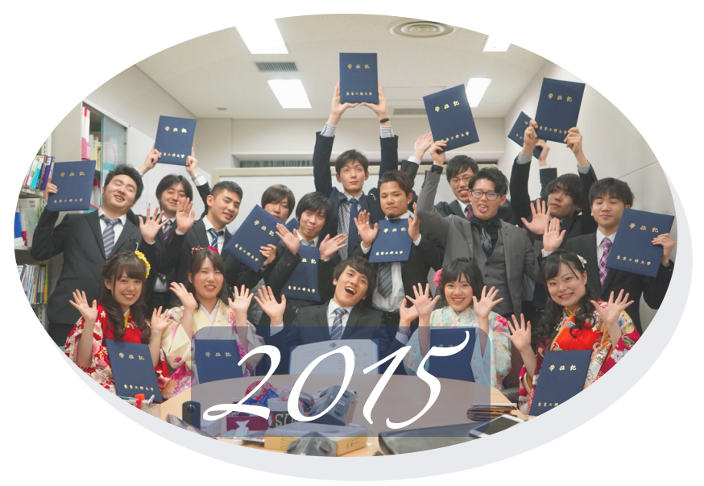

魅力 ー活動実績ー
2016年度
1月中旬に 内定第１号。
3月1日の情報解禁日前までには、5名が内々定獲得（内々定立30%）。
就活の外部環が好転してきている影響もあり、近来にない速いペース、それこそ爆速の内定報告ラッシュ。
４月末の時点では、内々定率は88%を超える結果。複数の企業から内々定を獲得した学生も多数。
在校生の声

2015年度
卒研ⅡS評価者数 ダントツNo.1
軽部賞受賞者数 ダントツNo.1
学会発表 15／17達成
アイドルデビュー 1名
IPSJ学生奨励賞 9年連続 3名
Mashup 応募5名 決勝進出 1名
小学校総合学習貢献 計4回実施
2014年度 以前